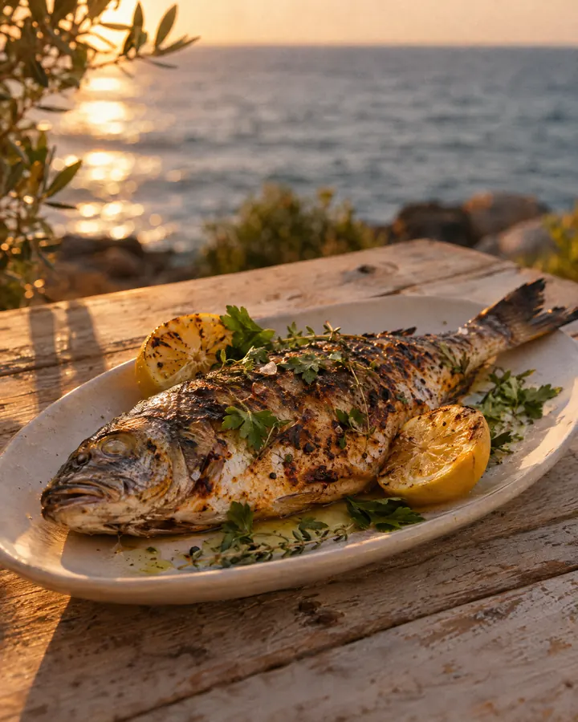
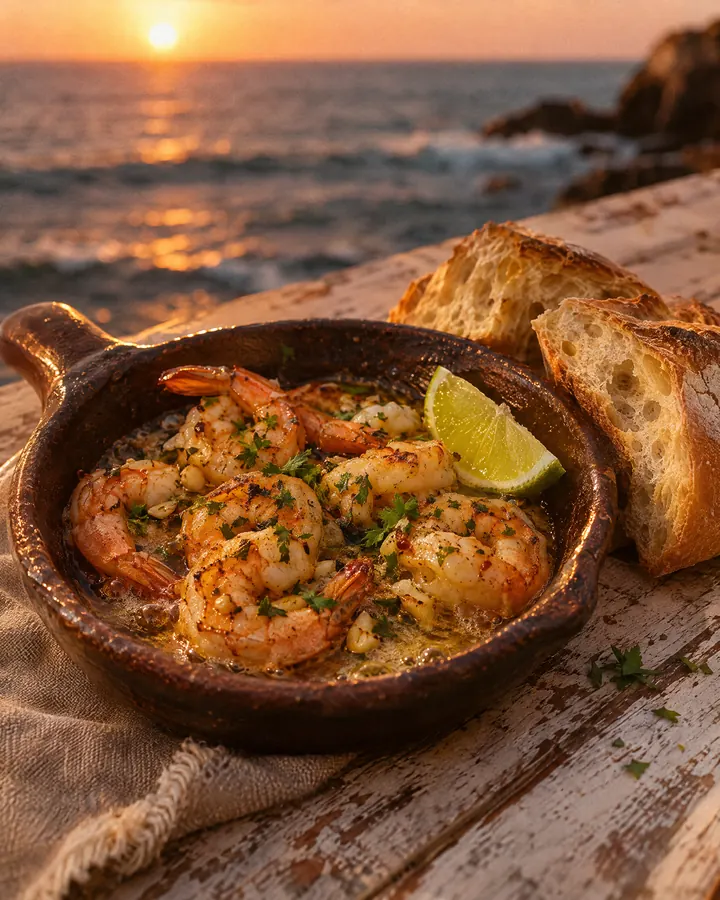
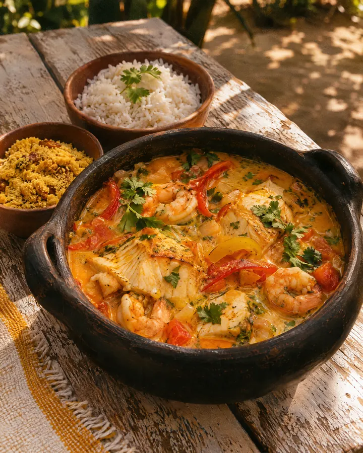
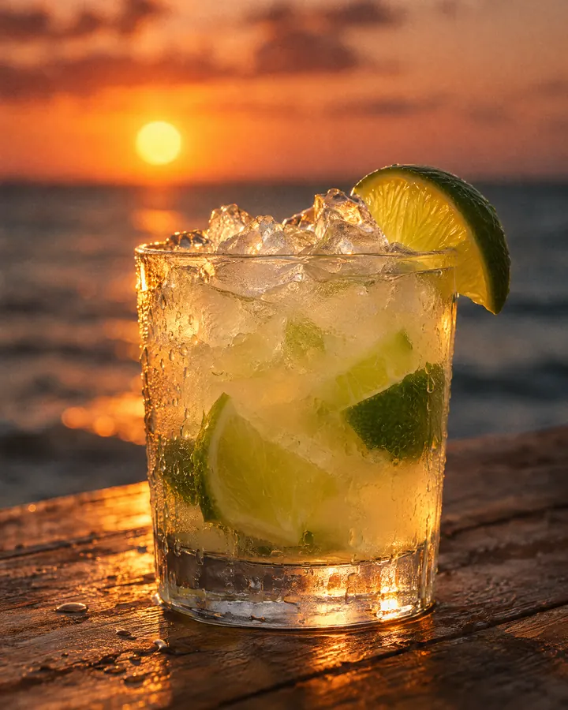

Saborear
Armação · Florianópolis
Saborear
A vista é o primeiro prato. O resto chega à mesa.
Da cozinha, de frente pro mar
Imagens ilustrativas, geradas por IA, para mostrar o clima. Na versão final entram as fotos dos pratos da casa, com crédito.

Imagem ilustrativa · IA
Imagem ilustrativa · IA
Imagem ilustrativa · IA
Imagem ilustrativa · IACardápio
O que tem na mesa
Cardápio ilustrativo · pratos e preços reais a confirmar
Horário
Chegue antes do sol ir embora.
Onde fica
De frente para a praia.
Endereço a confirmar
O mapa do Google com o pino da casa entra aqui assim que o endereço for confirmado.